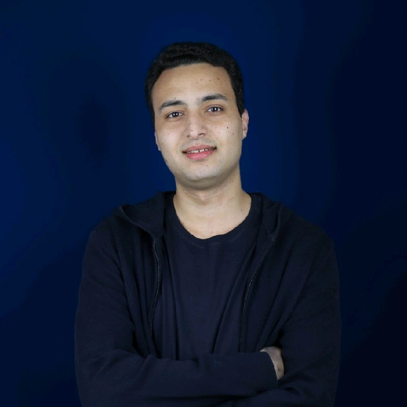

Ahmed Hany Hereiz
MSc Student, Queen’s University
Software Analysis and Intelligence Lab (SAIL)
|

|
About Me
I am an MSc student at Queen's University, Canada. My research interests lie at the intersection of machine
learning and software engineering, with a particular focus on intelligent and agent-based systems.
Research Interests
- Machine Learning for Software Engineering
- Mining Software Repositories
- Multi-Agent Systems
- AI-Assisted Software Development
Education
-
MSc in School of Computing, Queen's University, Canada
2026 - Present
-
BSc in Mechatronics and Robotics Engineering, Mansoura University, Egypt
GPA: 3.84 / 4.0
2020 - 2025
Publications
-
Title of Your First Publication
Ahmed H. Hereiz, Co-authors…
Conference or Journal Name, Year
View on Google
Scholar
Online Profiles
Contact
Email: ahmed.hereiz@queensu.ca